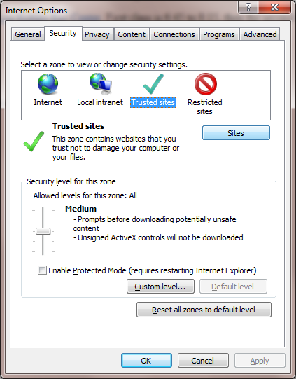
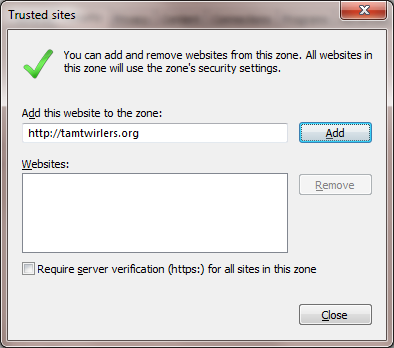

Troubleshooting Guide
Here's some hints if you're having problems viewing the animations.
Problem: There's no menus, and it says something's wrong with Javascript.
Solution: You need to turn on Javascript, which is a computer
language built into the browser. Normally it's on, but for various reasons
it might get turned off.


Problem: I can't get the menus to work, or other strange errors.
Solution: Try reloading the page. With Internet Explorer, that's View -> Refresh.
If that doesn't work, try pressing Ctrl+F5. Finally, try flushing your browser's cache.
For Internet Explorer,
that's under Internet Options, then Delete under Browsing history. Then
check Temporary Internet Files section and click on Delete.
Problem: I'm using Internet Explorer 7 or 8
and it it says I need Java.
Solution: Download and install Java from
java.com. Or upgrade to
Internet Explorer 9, if you're running Windows Vista or 7.
Or use Firefox,
Chrome,
or Opera.
None of these browsers needs Java.
|
If this is what you see for an animation you need to install Java.
|